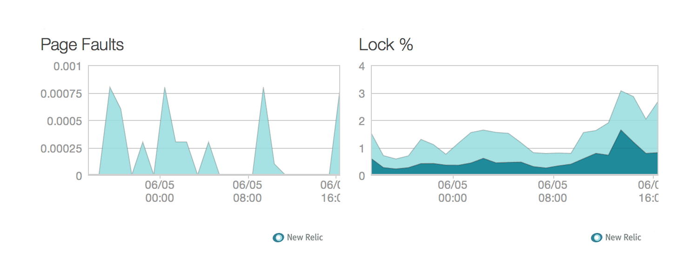

MongoHQ + New Relic = <3
With the release of the New Relic PlatformThe above chart shows the MongoDB opcounters – queries, deletes, updates, getmores, and commands. MongoDB opcounters will reveal how database usage changes as your application grows. Also, daily patterns and usage spikes will be easily found. Both of these can you deliver a smoother application to your customers.
{kind=link}
Charts have all the New Relic goodness: drag and drop time selections with precision to the minute.
Performance Indicators
To dive into performance issues, see the page faults and lock percentage charts. With MongoDB, page faults and lock percentage are symptoms of slowing performance. New Relic Platform + MongoHQ integration will keep you on top of your trends as your application usage grows along side your database, and keep ahead of your database and application growth.
Historical Views for All!
And now for the big reveal: historical database performance metrics. With the performance metrics being sent to New Relic, at anytime, compare current performance with the past. Have a usage spike last week? Want see how your database performed during the usage spike (allthethings)? Now it is simple to get started.
About New Relic
If you’ve used New Relic, you know the value of their product. The New Relic product gives insight into all metrics for an application. MongoHQ is a passionate user of New Relic, and we encourage our customers to use it. Not only does it solve time finding bottlenecks, but makes improving performance measureable. There is no better feeling than an apdex score > 98%.
Special offer for All MongoHQ customers! Get New Relic Standard Free (typically $49 / month) by going to http://newrelic.com/mongohq!
Now, GO!
MongoHQ integration with the New Relic Platform has rounded out our product offering for our customers. It matches outstanding database platform with detailed insight into the performance of the database.